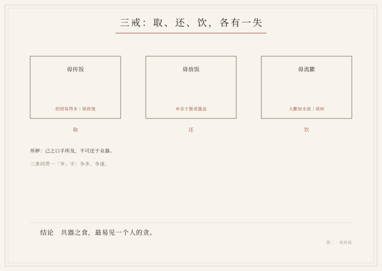

曲礼上 · 一·六十八 · 第 66 课
三件事不许做：把饭捏成一团；把手上剩的饭放回器里；大口连饮如水流。前两条为贪，后一条为疾。
说什么事：毋抟饭，毋放饭，毋流歠。
落在哪一层：仪。上节立共器之则，此节举共器之戒。
为何编在此位：一·六十七讲「共食不饱」，此节正言「争饱」之形，逐条给形状。
【经】毋摶飯，毋放飯，毋流歠。
【注】為欲致飽，不謙。去手餘飯於器中，人所穢。大歠嫌欲疾。
毋抟饭 注「为欲致饱，不谦」。疏：「共器若取饭作抟，则易得多，是欲争饱，非谦也。」
毋放饭 注「去手余饭于器中，人所秽」。疏：「手就器中取饭，饭若黏著手，不得拂放本器中也」「当弃余于篚；无篚，弃余于会。会谓簋盖也。」
毋流歠 注「大歠嫌欲疾」。疏：「开口大歠，汁入口如水流，则欲多而速，是伤廉也。」
歠 饮也，今作「啜」之近义。此专指饮羹汁。
不要把饭捏成团；不要把手上剩下的饭放回器里；不要大口连饮如水流。
三条戒，皆从「争」字出。抟饭是争多，放饭是把己之秽还众，流歠是争速。共器之食，最易见一个人的贪；礼就从这三处下手，把贪的形状一一指出来。
第一层 抟饭之贪 疏说得极透：捏成团则一次取多。礼不禁人吃饱，禁的是「以术取多」。此条今日仍可解：自助取食，堆成一座山者，即抟饭之类。
第二层 放饭之秽 饭黏在手，须弃于篚，无篚则弃于簋盖。注「人所秽」三字，说的是共器的底线：己之口手所及，不可还于众器。
第三层 流歠之疾 所戒者不是饮，是「如水流」。声音与速度都是信号：喝得急，则欲多。礼察人于声与速之间。
第四层 三戒的分工 抟饭戒取，放饭戒还，流歠戒饮。取、还、饮三处都管住，共器之食才安。礼之周密，在把一件事拆成三个动作。
与今日何干 今人宴席，仍见三样：夹菜堆碗、把咬过的放回公盘、喝汤呼噜作响。此节可作一面镜子，不必待古人来责。
| 左 | 右 |
|---|---|
| 毋抟饭 | 捏饭成团，易得多，欲致饱 |
| 毋放饭 | 手余饭不得拂还器中；弃于篚或簋盖 |
| 毋流歠 | 大歠如水流，欲多而速，伤廉 |
| 三戒之所 | 取、还、饮，三处各有一失 |
| 所秽 | 己之口手所及，不可还于众器 |
画案上一只饭器，器口一侧有一小堆被捏紧的饭团（成块、棱角分明），另一侧器沿上挂着一小撮散饭（将要落回器中），器旁一只小篚，篚中已有一撮弃饭。三处各据一方。不画手、不画人、不写文字。赭色只在饭团边缘与篚沿。
